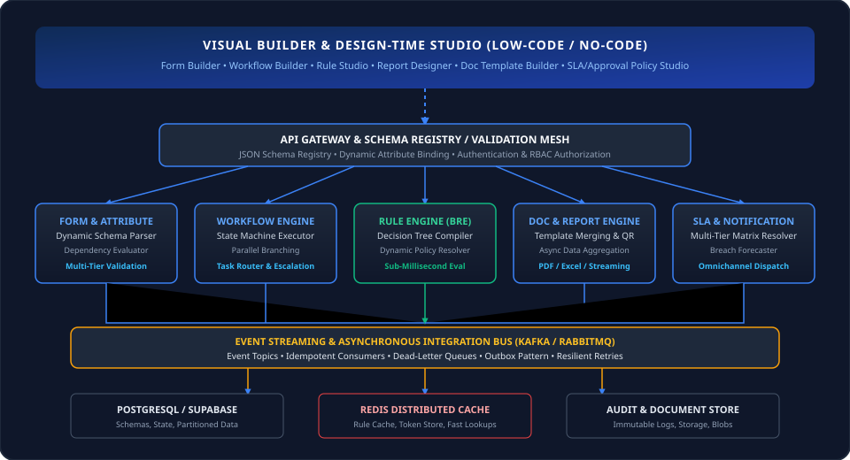
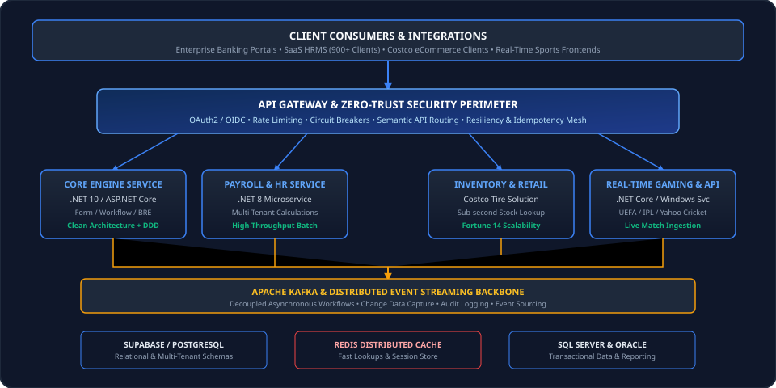
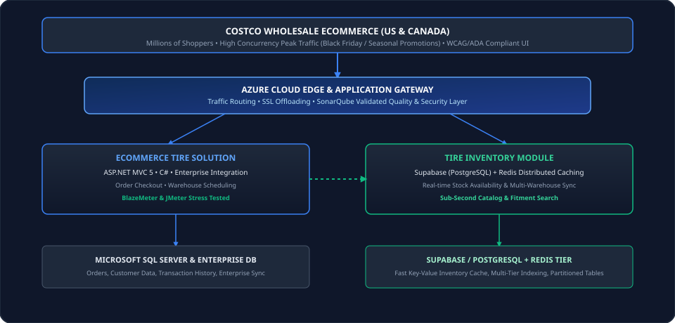

Hemant Panchal
Designing scalable enterprise applications, distributed microservices, and low-code builder ecosystems with 15+ years of engineering excellence, robust system architecture, and proven business outcomes across Banking, SaaS, Global Retail (Fortune 14), and High-Throughput platforms.
Core Architectural Expertise
Enterprise Solution Design, Microservices, Event-Driven Architecture (EDA), Clean Architecture & Domain-Driven Design (DDD)
Enterprise Engine Ecosystem
Form Builder, Workflow Orchestration, Business Rule Engine (BRE), Document & Report Engines, SLA Matrix & Notification Engines
Modern Tech Backbone
.NET 10/8, ASP.NET Core, C#, Apache Kafka, PostgreSQL, Supabase, Redis, SQL Server, Kubernetes & Azure/AWS
Governance & Reliability
Architecture Decision Records (ADRs), Zero-Trust Security, Idempotency, HA/DR, SonarQube Quality Gates
Professional Architecture Leadership
A strategic technical architect who transforms complex business requirements into scalable, resilient, and maintainable software systems.
I am an accomplished Technical Architect & Enterprise Solution Architect with 15+ years of continuous experience designing, engineering, and governing mission-critical enterprise systems.
Throughout my career, I have held technical leadership across high-stakes domains—spanning Banking & FinTech solutions, Enterprise HRMS SaaS platforms (serving 900+ client organizations), Fortune 14 Global Retail (Costco Wholesale US & Canada), High-Concurrency Live Sports Gaming (UEFA Champions League, IPL, Yahoo Cricket), and Enterprise RFID Tracking Systems.
My primary architectural strength is bridging business strategy with technical execution: designing end-to-end architectures covering microservices, database models, asynchronous event messaging, API resiliency, zero-trust security, Kubernetes containerization, and continuous operational readiness.
Enterprise System Design
Defining service boundaries, distributed data flows, domain models, and high-availability topologies.
Low-Code Builder Engines
Architecting schema-driven Form, Workflow, BRE, Document, Report, SLA, and Notification engines.
Cloud & Microservices
Deploying resilient .NET 10/8 microservices, Kafka event streaming, and Kubernetes infrastructure.
Governance & Mentorship
Authoring ADRs, establishing Clean Architecture / SOLID standards, and mentoring engineering squads.
Technical Expertise & Skills Matrix
Verified technology stack and architectural capabilities based directly on enterprise project delivery.
Architecture & System Design
Enterprise Builders & Engines
Frameworks & Languages
Databases & Caching
Messaging & Event Streaming
Cloud, Containers & DevOps
Security & Performance QA
Leadership & Governance

Enterprise Low-Code Engine Architecture: Visual design studio for Form, Workflow, BRE, Document, Report, SLA, and Notifications decoupled from execution runtimes via schema registries, API gateways, Kafka event streaming, and polyglot persistence.

Distributed Microservices & Event-Driven Architecture: Zero-trust API Gateway layer routing to .NET 10/8 microservices with Apache Kafka event streaming, Supabase/PostgreSQL multi-tenancy, and Redis distributed caching.

Costco Wholesale High-Concurrency Inventory Architecture: Azure Cloud edge routing, ASP.NET MVC 5 eCommerce tire platform with Supabase (PostgreSQL) and Redis for sub-second inventory catalog lookups across US & Canada.
API Resiliency & Idempotency
Designing semantic versioned REST APIs with circuit breakers, exponential retries, rate limiting, and idempotent key mechanisms for distributed consistency.
Zero-Trust Enterprise Security
Enforcing OAuth2/OIDC authentication, granular RBAC, centralized secrets management, field-level encryption, and tamper-evident audit logging.
HA, Scalability & DR
Architecting multi-region disaster recovery, horizontal container scaling via Kubernetes, automated database failovers, and 99.99% uptime designs.
Architecture Governance (ADRs)
Maintaining Architecture Decision Records (ADRs), conducting technical design assessments, POCs, and aligning business requirements with technical trade-offs.
Professional Experience Timeline
15+ years of verified software engineering, technical architecture, and leadership delivery across enterprise organizations.
Technical Architect
End-to-End Solution Architecture & Enterprise Engines
- End-to-End Enterprise Architecture: Responsible for providing technical architecture and solution design covering application, database, APIs, integrations, infrastructure, security, deployment, monitoring, and operational readiness throughout the lifecycle.
- Low-Code Builder Ecosystem: Architected complete suite of enterprise builders and runtime engines: Form Builder & Dynamic Attribute Engine, Workflow Builder & Orchestration Engine, Business Rule Engine (BRE), Report Builder & Engine, Document Builder & Engine, SLA & Approval Policy Engine, and Multichannel Notification Engine.
- System Design & Service Boundaries: Defined and validated system architecture, component design, service boundaries, data flows, and integration patterns for distributed enterprise services.
- Technology Selection & ADRs: Evaluated technology stacks, databases, cloud services, messaging, and caching with clear trade-offs; maintained Architecture Decision Records (ADRs).
- Engineering Standards & Clean Architecture: Defined and enforced SOLID principles, Clean Architecture, DDD, coding standards, and SonarQube quality gates across engineering teams.
- API & Integration Architecture: Architected resilient REST APIs and Kafka event integrations featuring semantic versioning, OAuth2/OIDC, circuit breaker, retry policies, timeouts, and idempotency.
- Kubernetes, CI/CD & Observability: Defined containerization standards, Kubernetes infrastructure, multi-stage automated CI/CD pipelines, audit logging, tracing, alerting, and DR protocols.
- Technical Leadership & Mentorship: Guided developers and technical leads, resolved complex production bottlenecks, and promoted engineering best practices.
Project Manager / Technical Lead
Core Payroll Modernization & Microservices Architecture
- Payroll Engine Modernization: Re-architected core Payroll System into a generic, highly configurable multi-tenant engine supporting diverse salary structures and tax rules across 900+ enterprise clients.
- Microservices & Event-Driven Design: Implemented microservice architecture using .NET 8, Apache Kafka for asynchronous processing of payroll cycles, and Supabase (PostgreSQL).
- Engineering Leadership & Scrum: Led end-to-end development, code reviews, technical documentation, architectural grooming, and daily Scrum calls.
- Requirement Translation: Collaborated with implementation specialists and delivery heads to convert client customization needs into standard, reusable product capabilities.
Technology Lead
Costco eCommerce Tire Solution & Inventory Microservice
- Fortune 14 Solution Delivery: Led end-to-end solution design, technical architecture, and delivery of the high-volume eCommerce Tire Solution for Costco Wholesale US and Canada.
- Tire Inventory Module: Led the Tire Inventory module architecture, leveraging Supabase (PostgreSQL) and Redis distributed caching for high-speed stock searches alongside enterprise systems.
- Quality, Accessibility & Standards: Enforced coding standards, WCAG/ADA accessibility compliance, SonarQube quality gates, and automated code review pipelines.
- Performance Engineering: Conducted performance load testing using BlazeMeter and JMeter, optimizing database queries, API response times, and caching hit ratios.
- Client Leadership & Releases: Led technical discussions with onsite senior leadership; managed release planning, production deployments, and critical incident support.
- Honors & Awards: Received "Star of the Month" award for outstanding performance and engineering excellence on the Costco Wholesale platform.
Senior Associate – Technical Lead
High-Concurrency Live Sports Gaming & Data Ingestion
- High-Concurrency Gaming Platforms: Designed and developed high-throughput backend services and Web APIs for Daily Fantasy Cricket, Football, and Rugby games.
- Low-Latency APIs: Engineered Web APIs in .NET Core, ASP.NET, Windows Services, AWS, and PostgreSQL to handle massive traffic spikes during live match broadcasts.
- Real-Time Simulation & Scoring: Built match data feed ingestion daemons, automated game simulation engines, and real-time point calculation/leaderboard systems.
- API Contracts: Authored standardized API documentation for frontend/mobile clients and integrated third-party live sports data feeds.
Programmer Analyst
Enterprise Payment & Voucher Database Architecture
- Database & Transaction Systems: Designed relational database objects including tables, complex stored procedures, triggers, and functions on SQL Server.
- Modular Architecture: Involved in architectural refactoring to convert siloed components into reusable, generic enterprise modules.
- Performance Tuning: Modified heavy queries and batch procedures to optimize execution time for high-volume voucher transactions.
Software Developer
Full-Stack Web Development & Business Systems
- Web Application Development: Developed web applications for online retail, inventory tracking, and import-export operations in ASP.NET MVC and C#.
- Database & Reporting: Designed stored procedures, database tables, and Excel reporting engines; reviewed code for performance optimization.
Software Developer
RFID Hardware Integration & Smart Device Applications
- RFID & Smart Device Engineering: Developed software for RFID vehicle tracking, document tracking, and handheld smart devices (Windows CE) with RFID readers and tags.
- Client Engagement: Participated in requirement gathering with enterprise/defense stakeholders and conducted live on-site demonstrations.
Key Enterprise Projects
Significant enterprise systems delivered across banking, SaaS, global retail, and high-concurrency platforms.
Low-Code Builder & Rules Platform
End-to-end architecture of an extensible enterprise engine suite enabling business users to configure dynamic forms, workflows, business rules, reports, documents, SLAs, and omnichannel notifications without code changes.
- Architecture: Schema-driven Microservices + Kafka + PostgreSQL
- 7 Integrated Engines: Form, Workflow, BRE, Document, Report, SLA, Notification
- Standards: Clean Architecture, DDD, ADRs, Zero-Trust Security
Multi-Tenant Payroll Modernization
Modernized the core payroll engine into a generic, multi-tenant microservices platform capable of executing complex statutory calculations and payroll cycles across 900+ enterprise clients.
- Architecture: Event-driven Microservices with Kafka & Supabase
- Impact: Unified payroll computation logic across 900+ client organizations
- Leadership: Managed Scrum sprint execution, reviews, and delivery
Costco eCommerce Tire Solution
Led the architecture and delivery of the high-traffic eCommerce Tire platform for Costco Wholesale US and Canada, including the Tire Inventory microservice for real-time warehouse availability.
- Architecture: ASP.NET MVC 5, Redis Cache, Supabase (PostgreSQL), Azure
- Quality & Compliance: WCAG/ADA accessibility & SonarQube gates
- Recognition: Awarded "Star of the Month" for delivery excellence
Real-Time Live Fantasy Gaming Backend
Architected high-throughput backend APIs and simulation daemons for Daily Fantasy sports games powering UEFA Champions League, Yahoo Cricket, IPL, and ESPN CricInfo platforms.
- Architecture: .NET Core Web API, Windows Services, AWS, PostgreSQL
- High Concurrency: Handled massive traffic spikes during live match broadcasts
- Real-time Feeds: Automated live match point calculations and rankings
Enterprise Payment & Voucher Suite
Designed database architecture, stored procedures, and modular web applications for Sodexo EPS and Voucher SWOS transaction platforms.
- Architecture: ASP.NET MVC, Microsoft SQL Server, Stored Procedures
- Optimization: Refactored heavy queries and streamlined transaction batches
RFID Smart Device Tracking Platform
Engineered RFID vehicle tracking, document tracking, and smart handheld device applications (Windows CE) with RFID reader/tag integrations for defense and prison management.
- Integration: RFID hardware protocols, Windows CE handheld readers
- Delivery: Onsite client demonstrations and deployment
Architecture Case Studies
In-depth technical breakdown of business challenges, system design decisions, scalability, and engineering contributions.
Case Study 1: Enterprise Low-Code Builder & Dynamic Engine Platform
Business Problem & Objective
Enterprise banking applications required frequent changes to dynamic forms, approval matrices, document templates, and business rules, which previously required time-consuming code changes, manual QA cycles, and production redeployments.
Architectural Approach
Architected a decoupled, metadata-driven low-code platform featuring dedicated runtime engines (Form, Workflow, BRE, Document, Report, SLA, Notification) backed by a centralized schema registry and event-driven messaging.
Key Design Decisions & Trade-offs
- Declarative Rule Engine: Decoupled business logic from core codebase using condition evaluation trees.
- State Machine Workflows: Modeled workflows as deterministic state machines to ensure auditability and recoverability.
- Architecture Decision Records (ADRs): Maintained ADRs documenting stack selections and boundary decisions.
Scalability, Reliability & Security
- Scalability: Stateless execution engines horizontally scalable on Kubernetes with Redis caching.
- Reliability: Kafka event queues with idempotent consumers and dead-letter handling.
- Security: Zero-Trust access control, OAuth2/OIDC, and immutable audit logs.
My Architectural Responsibility
Provided end-to-end technical architecture, selected technology frameworks, authored system specifications, defined API contracts, enforced Clean Architecture/DDD/SOLID standards, and guided development leads through implementation.
Case Study 2: Multi-Tenant Enterprise Payroll Modernization
Business Problem & Objective
With over 900 enterprise clients having bespoke payroll formulas, tax calculation rules, and statutory compliances, the legacy system faced performance bottlenecks and high maintenance overhead during month-end payroll execution.
Architectural Approach
Architected a generic multi-tenant payroll engine leveraging .NET 8 microservices, Supabase (PostgreSQL) partitioned data models, and Apache Kafka for asynchronous batch processing.
Key Design Decisions
- Generic Formula Engine: Abstracted client-specific payroll calculation formulas into configurable rule sets.
- Asynchronous Batch Queuing: Decoupled bulk salary calculations from web UI using Kafka event topics.
Scalability & Delivery Management
- High-Throughput Batching: Enabled parallel processing of payroll batches across distributed worker nodes.
- Agile Execution: Managed daily Scrum calls, code reviews, and cross-team delivery milestones.
Case Study 3: Fortune 14 Global Retail eCommerce & Inventory Engine
Business Problem & Objective
Costco Wholesale required a highly scalable, accessible eCommerce tire platform to support millions of shoppers across the US and Canada with real-time tire inventory availability across hundreds of regional warehouses.
Architectural Approach
Engineered the eCommerce platform utilizing ASP.NET MVC 5 and C#, coupled with a dedicated Tire Inventory module powered by Supabase (PostgreSQL) and Redis distributed caching for sub-second inventory lookups.
Performance & Quality Engineering
- Stress Testing: Conducted comprehensive load tests via BlazeMeter and JMeter to ensure peak holiday resilience.
- Compliance: Enforced WCAG/ADA accessibility standards and SonarQube quality gates.
Leadership & Business Impact
- Stakeholder Alignment: Led technical roadmap steering with Costco onsite senior leadership.
- Award: Received the "Star of the Month" award for engineering excellence and delivery reliability.
Architecture Thinking & Governance
How I approach architectural decision-making, evaluate trade-offs, and maintain long-term system health.
Architecture Decision Records (ADRs)
I establish and maintain ADRs to formally document context, options evaluated, chosen architecture, consequences, and trade-offs, ensuring institutional technical clarity across engineering teams.
Declarative Engines vs. Custom Code
Where business rules and forms evolve rapidly, I architect schema-driven engines (BRE, Form Builder) that decouple business policy changes from software deployment cycles.
Polyglot Persistence & Caching
I strategically match storage technologies to access patterns—using PostgreSQL/Supabase for structured data, Redis for sub-millisecond caching, and SQL Server for relational reporting.
Resilient Asynchronous Messaging
I design event streaming via Apache Kafka and message queues with strict idempotency and retry policies, isolating failures and preventing cascading outages in distributed systems.
Zero-Trust Security & Compliance
I embed security at the architectural core: token-based authentication (OAuth2/OIDC), centralized secrets management, encryption at rest/in transit, and tamper-evident audit logging.
Quality Gates & Observability
I enforce automated SonarQube quality gates, load testing with JMeter/BlazeMeter, distributed tracing, and actionable alerting to ensure systems are production-ready on day one.
Education & Key Recognition
Academic background and organizational honors verified from professional career history.
Academic Qualifications
Honors & Recognition
"Star of the Month" Award
Awarded by Infogain Software Engineering for outstanding engineering performance, technical leadership, and delivery excellence on the Costco Wholesale platform.
15+ Years Industry Milestones
Successfully designed and deployed enterprise systems supporting Fortune 14 global retail operations, 900+ enterprise SaaS clients, and millions of concurrent live sports users.
Connect & Collaborate
Interested in discussing enterprise architecture, solution design, technical leadership, or consulting opportunities?
I am always open to discussing enterprise solution design, low-code platform architecture, microservices transformations, and senior engineering leadership roles.
Send Direct Email